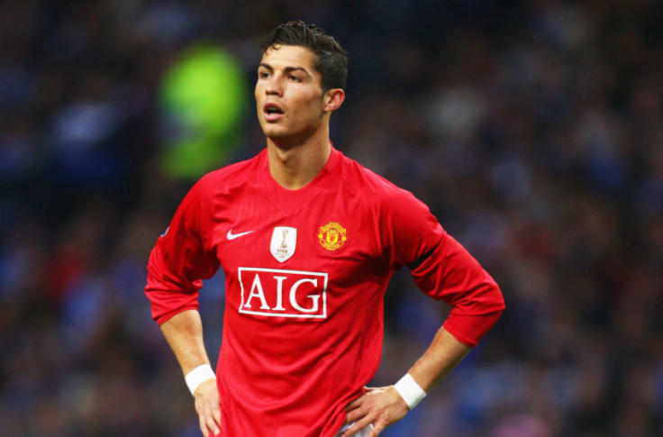

MANCHESTER UNITED
CRISTIANO RONALDO
Cristiano Ronaldo - W 2003, w wieku 18 lat, podpisał kontrakt z Manchesterem United. Już w pierwszym sezonie zdobył z klubem Puchar Anglii, natomiast w kolejnych latach pomógł United w zdobyciu trzech z rzędu tytułów mistrzowskich, dwóch Pucharów Ligi, Tarczy Wspólnoty, wygraniu Ligi Mistrzów, a także klubowego mistrzostwa świata. W wieku 23 lat, w 2008, po raz pierwszy w karierze sięgnął po Złotą Piłkę, tytuł Piłkarza Roku FIFA oraz Europejski Złoty But.Trener Manchesteru Alex Ferguson zdecydował się wydać na jego zakup ponad 12 milionów funtów. Stał się najdroższym nastolatkiem w historii angielskiej piłki nożnej. 16 sierpnia 2003 roku Portugalczyk po raz pierwszy wystąpił w koszulce Manchesteru, w spotkaniu przeciwko Boltonowi. Sezon 2005/2006 Premiership Ronaldo zakończył z ośmioma golami oraz tytułem najlepszego młodego gracza ligi na koncie. W Sezonie 2006/2007 Portugalczyk zagrał w 52 meczach we wszystkich rozgrywkach, strzelając w nich 23 gole, a także zaliczając 20 asyst.
